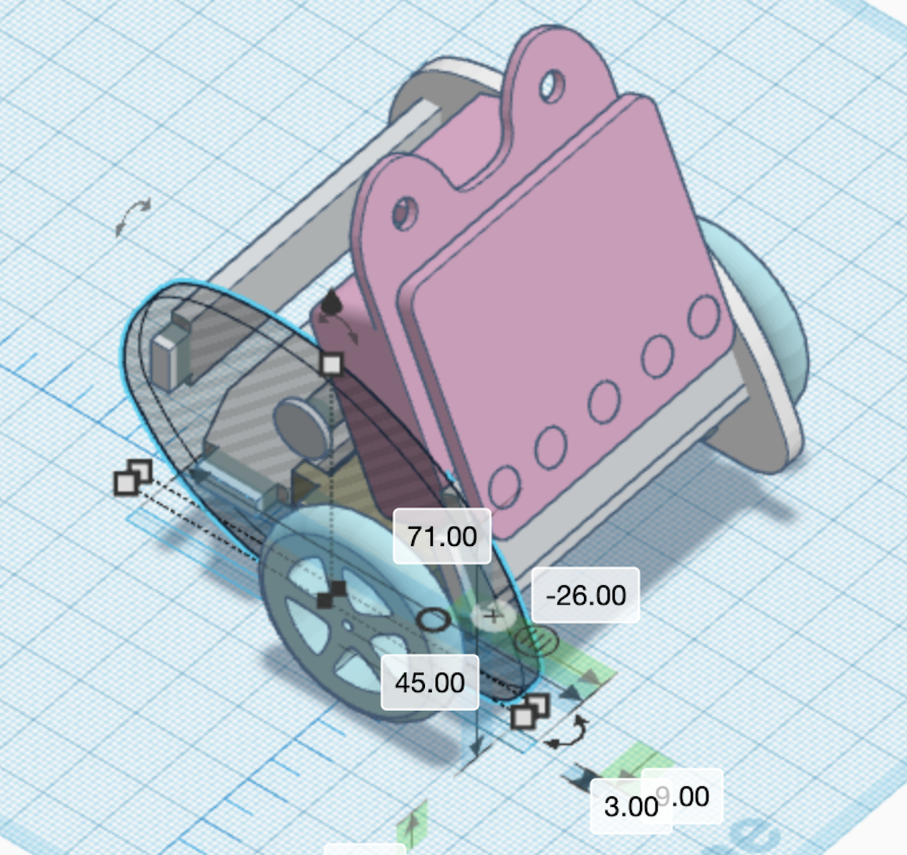
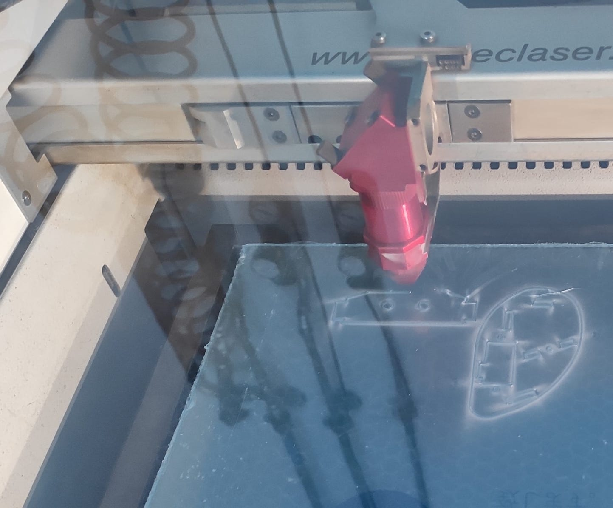
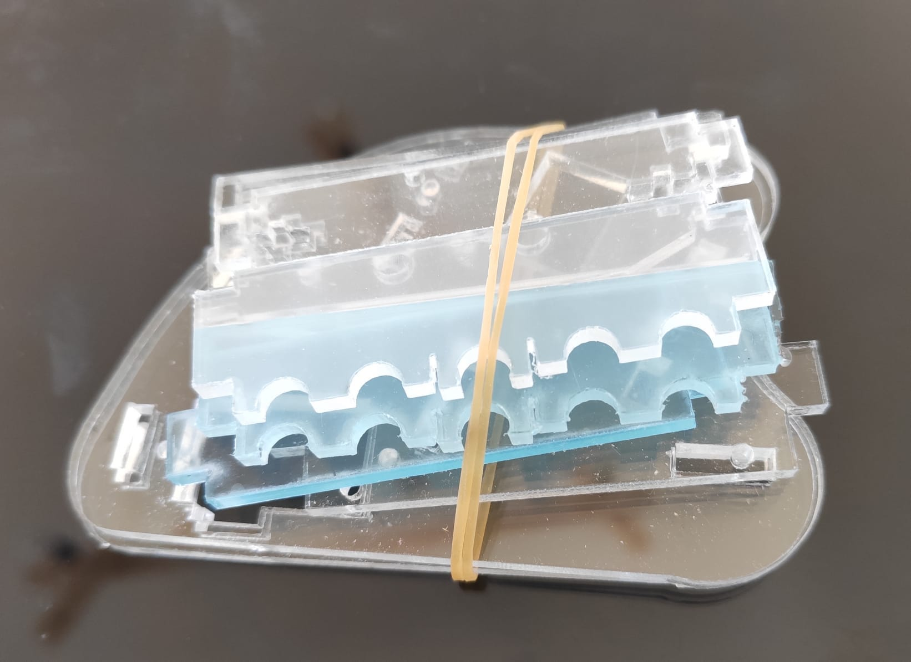
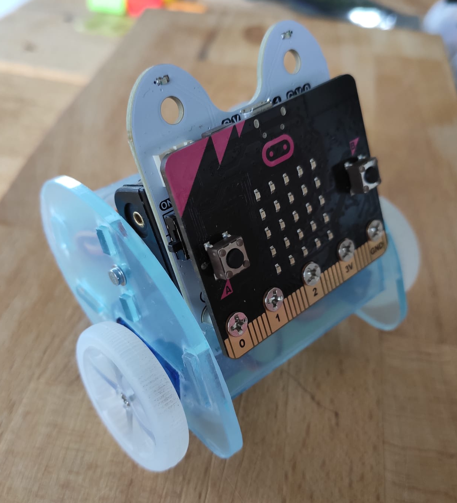

Computer-aided design (CAD)
While this morning you learned a great way to get familiar with standard mecanical problems of robotics and an easy way to prototype a design, you will often want and need to build something clean. For this you could learn machining, but you could instead learn to do the same with the help of computers which is what you'll do this afternoon.
| Drawing | Cutting | Cutted parts | Mounting |
|---|---|---|---|
|  |  |  |  |
Figure: Producing a plexiglass buggy.
To build a frame using computers, the process consists of two phases: first, designing using a CAD software, second, building using a machine that accepts to take as input your CAD. Today you'll learn how to do the first phase using an online software called Tinkercad. You'll do this with the goal to eventually cut your model in 3mm thick sheets of plexiglass using a laser cutter as shown in the picture above (you can get access to those in fablabs which are becoming more and more common in Switzerland). Starting with laser cutting has the advantage of being very similar to the cardboard you used this morning in terms of mecanics.
What you will need
Every pair of learners will need:
- A computer equipped with a connection to internet and a browser.
Introduction to Tinkercad
Figure: Objective: being able to design a buggy in 3D.
In this activity, you will learn the basics of CAD designing by reproducing the 3D model shown above of a robot very similar to the one we used this week. For this, go onto this virtual classroom. This will allow you to access tinkercad using only a nickname that your teacher will give you. That will also allow us to follow your progress and help you if you need.
Then follow the videos in the following playlist, which consist of a quick general introduction to the activity, an introduction to tinkercad and a tutorial to design a mobile robot. Excuse my lack of experience with such a teaching format. I had much time to develop my skills in robotics, much less in youtubing !
Congratulations, if you followed the steps along, you should by now have designed your first mobile robot in plexiglass. With the skills you developped along the way you should be able to put together most of the sensors, controllers and actuators you'll ever want to use.
Project
The project will be given to you during the week.